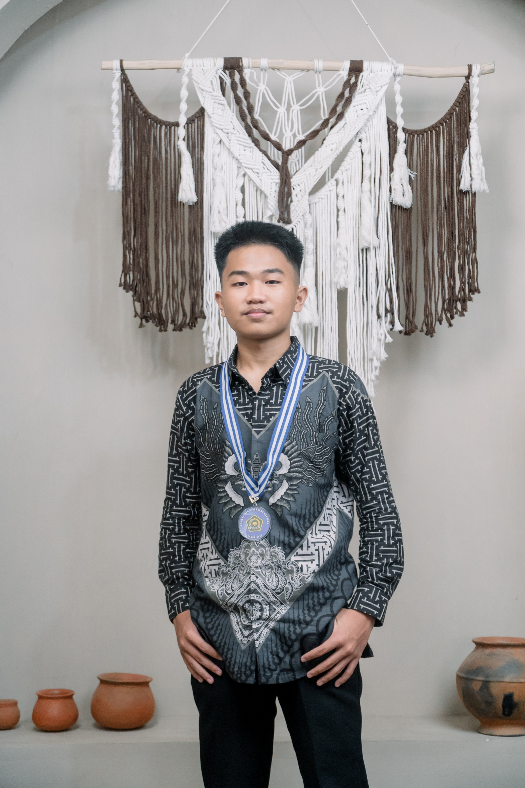
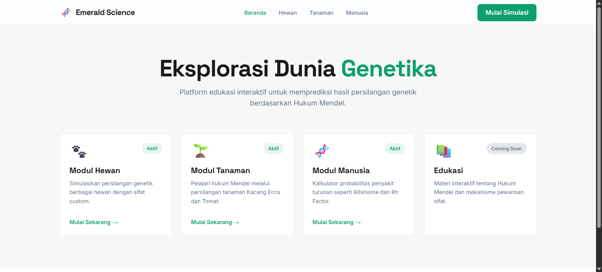

---- Heyyy There, I'm
Muh. Aidil Al Qadri Az
I Am a
Mahasiswa 19 tahun yang membangun pengalaman web yang keren. Belajar setiap hari, commit satu langkah maju

Mahasiswa 19 tahun yang membangun pengalaman web yang keren. Belajar setiap hari, commit satu langkah maju

Halo! Saya Muh. Aidil Al Qadri Az, seorang mahasiswa berusia 19 tahun yang passionate di dunia web development dan teknologi.
Meski masih muda, saya harus belajar dan mengembangkan skill di bidang JavaScript dan lain lain. Saya percaya tidak ada kata terlalu dini untuk mulai berkarya di dunia digital. Setiap hari adalah kesempatan belajar hal baru!.
"Muda bukan halangan. Setiap baris kode yang saya tulis adalah langkah menuju masa depan yang saya impikan" -- Developer Notto
Jajahi perjalanan saya melalui berbagai proyek,edukasi & sertifikasi, dan keahlian teknis.
Setiap bagian mewakili pencapaian dalam proses belajar saya yang berkelanjutan.

Program ini dirancang sebagai platform edukasi genetika berbasis Hukum Pewarisan Sifat Mendel dalam bentuk web app. Platform memungkinkan user memprediksi hasil persilangan genetik secara probabilistik untuk tiga kategori: hewan, tanaman, dan penyakit turunan manusia.
Mencari tantangan berikutnya yang berdampak luas.
Saya terbuka untuk kolaborasi, belajar bareng, dan proyek seru!
Hubungi saya lewat social media di bawah ini.